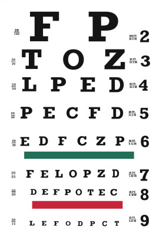
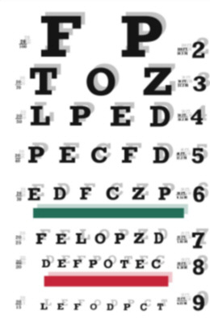
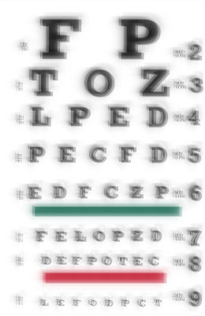
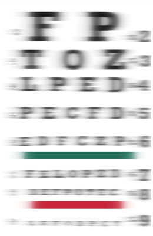
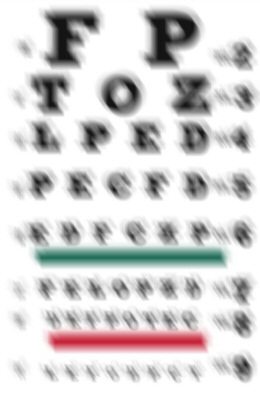

Популярность операции LASIK зависит от остроты зрения, то есть от того, насколько хорошо пациент может читать глазную карту Снеллена. Как и большинство людей, будущие пациенты, проходящие процедуру LASIK, считают, что соотношение 20/20 означает четкое зрение. Хирурги LASIK с удовольствием обсуждают результаты LASIK с точки зрения того, у скольких пациентов зрение достигает 20/20 без очков. Но хирурги LASIK не хотят говорить о том, что после LASIK зрение 20/20 может стать кошмаром наяву.
Клинические испытания, требуемые FDA, показывают, что LASIK снижает "качество зрения" даже при использовании новейшей технологии, одобренной FDA.
Взгляните на нижние четыре диаграммы, представленные ниже. За исключением нижней правой диаграммы, все они представлены в соотношении 20 к 20. У многих пациентов с процедурой LASIK "качество зрения" оставляет желать лучшего, но хирурги говорят им, что операция прошла успешно.

Линия 20/20 находится чуть выше красной линии на графиках ниже. Во всех примерах, кроме последнего, можно прочитать линию 20/20. Если после операции LASIK у вас будут результаты, подобные этим, ваш хирург может отрицать, что с вашим зрением что-то не так, потому что у вас соотношение 20/20. Если вы подадите в суд на хирурга, команда защиты хирурга заявит присяжным, что ваши шансы равны 20/20, и будет отрицать, что вам был причинен какой-либо ущерб. На самом деле, возможно, вы даже не сможете найти адвоката, который взялся бы за ваше дело. Индустрия LASIK знает об этом и извлекает из этого выгоду.




Несколько изображений любезно предоставлены VisionSimulations.com